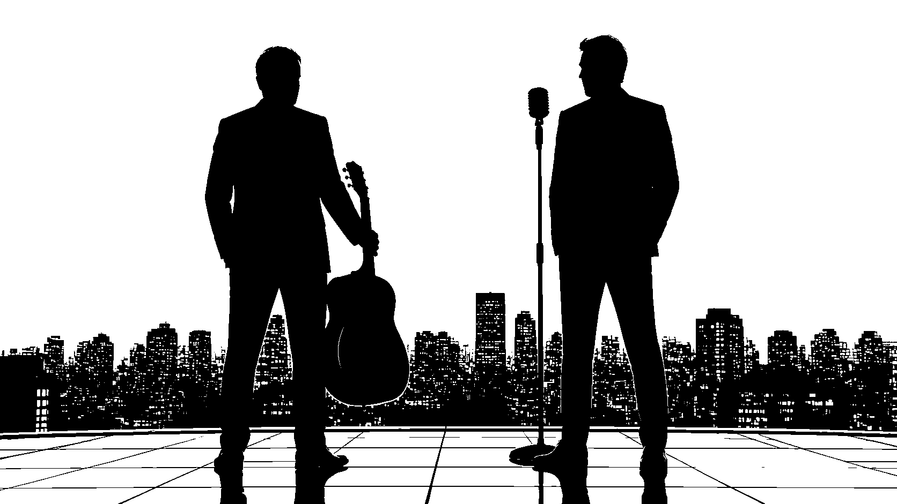
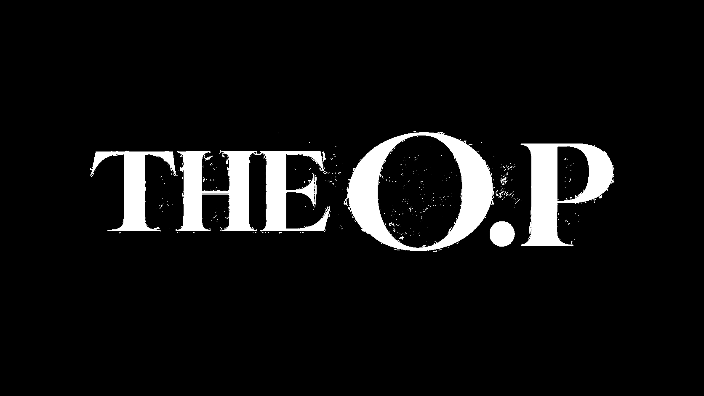
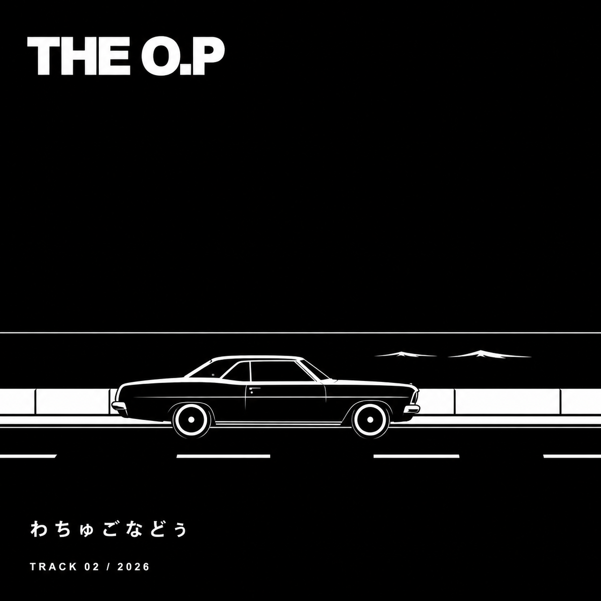
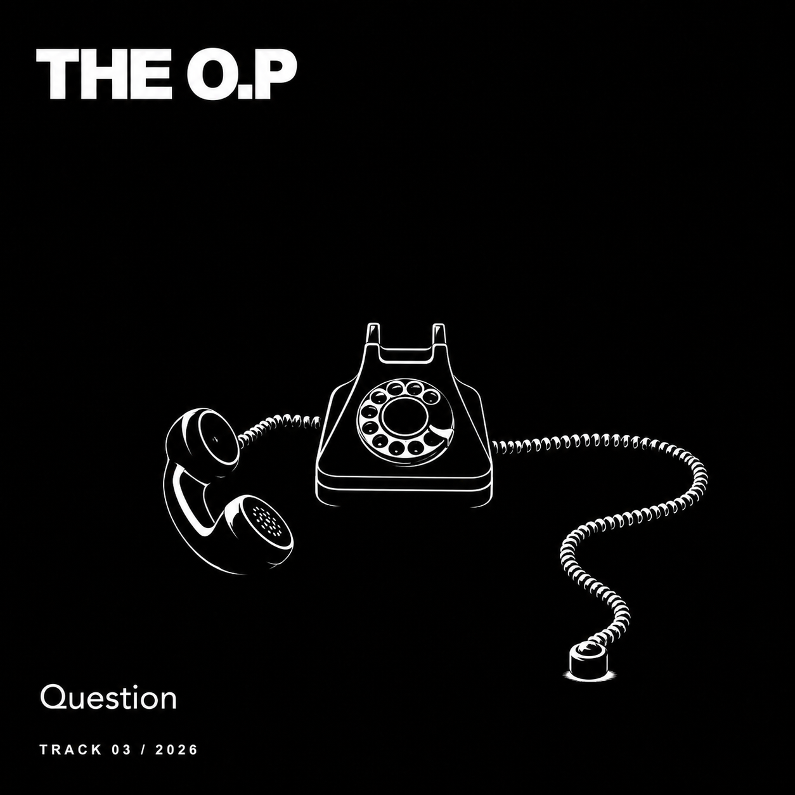
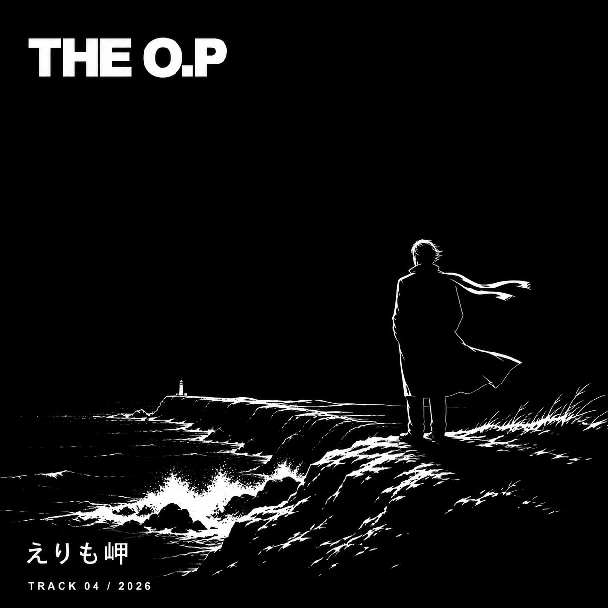
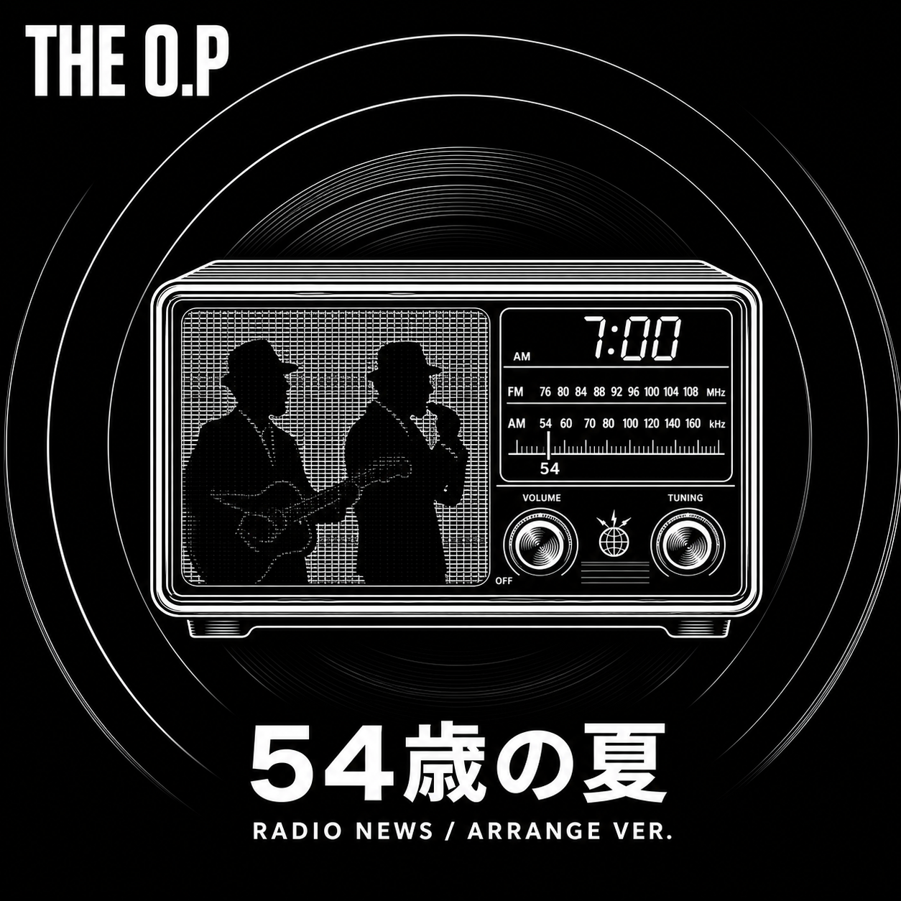
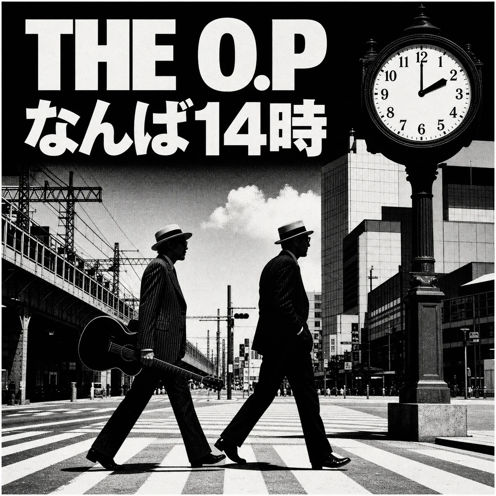
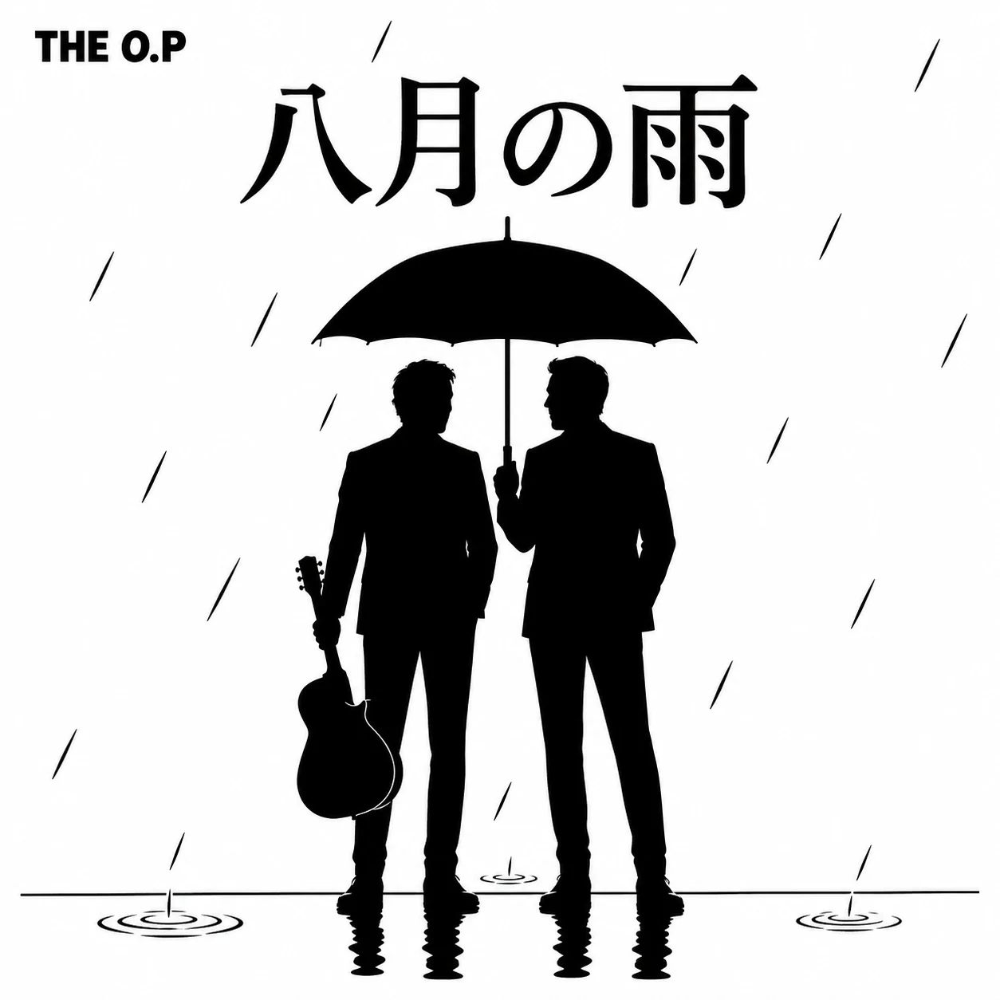

01
STORY / 54歳の夏
54歳の夏、
難波で結成。
まだ、終われない。
時代の流れに思い知らされても、
瞳にキスして、歯をくいしばる。
どこに向かうのか。
そんなにしてまで鳴らす理由が、まだある。


STORY / 54歳の夏
54歳の夏、
難波で結成。
時代の流れに思い知らされても、
瞳にキスして、歯をくいしばる。
どこに向かうのか。
そんなにしてまで鳴らす理由が、まだある。
FILM / OFFICIAL TRAILER
全米が泣いた——かもしれない。
この夏一番の、熱い思い。
THE O.P54歳の夏 — OFFICIAL TRAILER
SPECIAL FILM / 2026
ギターと声が、幾何学と波形に変わる。
音に反応して変容する、約1分31秒の映像作品。
THE O.PAUDIO-REACTIVE VISUAL / 01:31
MUSIC / THE O.P RECORDINGS
DEBUT RECORDING
GUITAR & VOCAL / THE O.P
iPhoneで録音された、二人の最初の記録。

NEW RECORDING
GUITAR & VOCAL / THE O.P
Aメロ接続版 / 1:16

NEW RECORDING
GUITAR & VOCAL / THE O.P
クリア・音量調整版 / 1:56

NEW RECORDING
GUITAR & VOCAL / THE O.P
クリア・音量調整版 / 1:28

RADIO NEWS ARRANGE
GUITAR & VOCAL / THE O.P
午前7時のニュース／中継回線アレンジ / 1:48

DEMO RECORDING
GUITAR & VOCAL / THE O.P
冒頭カット・クリア調整版 / 2:22

LIVE RECORDING
GUITAR & VOCAL / THE O.P
カラオケボックス録音／声前クリア版 / 3:15
年齢は、終わる理由にならない。
格好よさは、若さではない。
THE O.Pは、いま始まる。